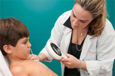
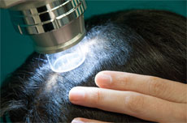

Doenças de pele, cabelo, unha e mucosa.
Tratamento de acne e rosácea.
Detecção e tratamento das várias causas de queda de cabelo e dos diferentes tipos de calvície masculina e feminina (e utilização da Tricoscopia manual e pelo METODO FOTOFINDER para auxilio diagnostico e acompanhamento da resposta ao tratamento)
Alterações das unhas como micoses, psoríase, etc.
Dermatologia pediátrica, na gestação e na 3ª idade.
Alergia dermatológica.
Dermatologia infecciosa e parasitária, como herpes e etc.
Oncologia cutânea
Prevenção, diagnóstico e tratamento de todos os tipos de câncer de pele
Acompanhamento clínico e por imagem dos diversos tipos de “sinais e pintas”
Utilização da dermatoscopia para detecção precoce do câncer de pele.
